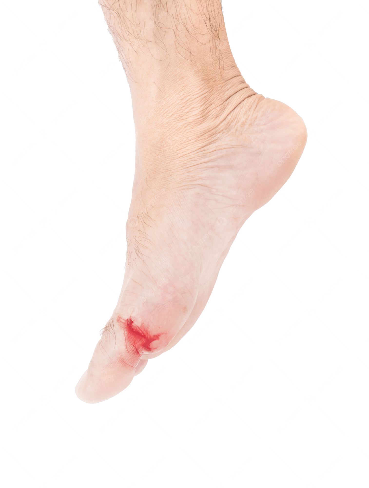
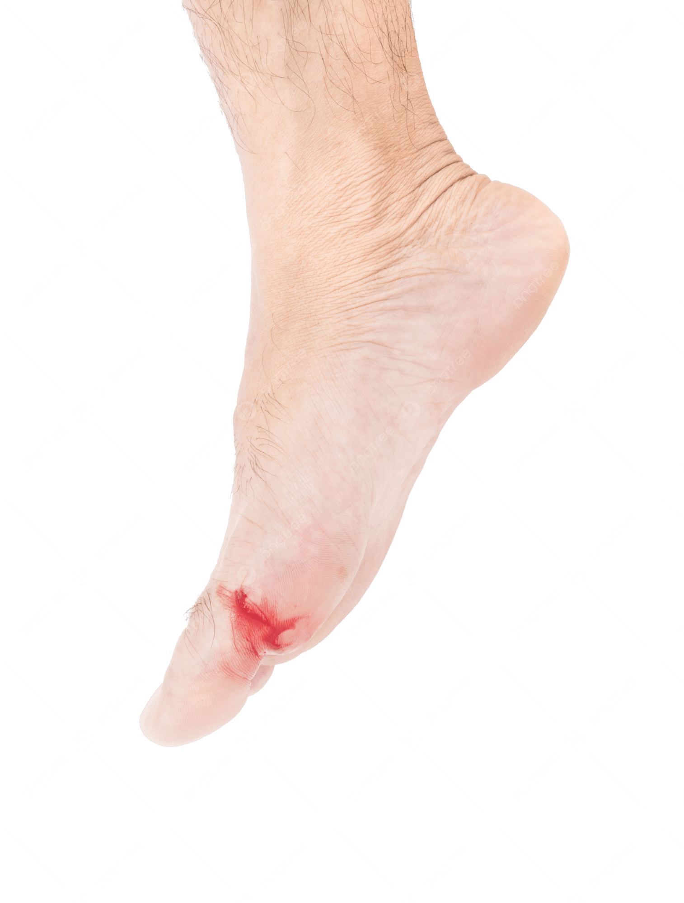

Record Highlight
Gash – 304/62
How does it sound that good?
———————————————————————————
Dylan Clancy
For fans of blown out cloud rap beats????? Indie Math Rock???? Cassettes from Christmas morning????? Conspiracies???? Digital and Analog tape production???? Eau Claire band, Gash, might actually be able to do it all—which they’ve just showcased on their 2024 record 304/62. The 15 song, 27 minute long record released through “Dick Bong Records” includes all of the attributes mentioned above (and more) to create a listening experience that feels akin to walking through a forest on cocaine. Its ideas are fast moving—as if Gash allows you to hear their point, but opts to deflect to something else right as you start to sit in it—yet there is a constant underlying calmness and warmth that brings you back down to a level-headedness. This is not unordinary in any of Gash’s previous work, however what was typically done with just guitar, bass, and drums, is now being done in conjunction with things like memory blips and crazy audio manipulation. In my opinion, footage stands out as the opus track of 304/62 in terms of atmosphere and aesthetic achievement. In fact, the entire record feels like watching a short film with your eyes closed, and footage feels like the climax (pause). Actually, this analogy makes it a lot easier to explain the highlights of this record. Track 1, two, feels like the crazy dream sequence that starts off an action movie, with days of our life acting as the calm morning after. PIG, the way I see it, could be nothing else but a car chase scene. The 6 track run from fantasy to sweaty feels like a perfect soundtrack to Manchester by the Sea; and finally, hollywood is to postcards as the final scene is to the credits.
When I first listened to this record during its release, most of the conceptual parts of it were lost on me. The differences between 304/62 and Gash’s other work was apparent to me, not because of what the different sounds actually were, but because of what they sounded like. That was a really long winded and stupid way to say that the engineering on this record was the first thing to catch my ear, and it did not let go. As someone who has worn their ears out through countless hours of audio digital and analog engineering, I was left baffled at how good and bad this record sounded at the same time.(By the way, by bad I just mean how tape sounds…which it does but in a really really good way blah blah you either get it or don’t). Anyways, I spent a few days listening—trying to figure out what exactly these guys were doing to get that sound. Cassette Tape sims or plug-ins never sound this good, and yet you can’t really make a fucking cloud rap beat through analog tape, either. Eventually I figured that instead of making things sound like shit on my roommates 4-track, I would just email the band and ask them directly. What I found out in hindsight isn’t too crazy and is probably more common than I think. The band recorded and mixed most of the tracks digitally (I assume they recorded all the full band songs this way), and then had them run through a Tascam Porta One to get the tape sound. As a naive 19 year old in a world populated by analog snobs and digital supremacists, this was completely mind-blowing to me. The narrative to me was always you either go fully analog or digital, and if you tried to mix the two it would be “cheating” or “inauthentic”. Yet again I am reminded that nothing anyone says is real or means anything…but regardless, I genuinely believe the engineering of Gash on this record should be praised and followed. A true representation of having the best of both worlds. All in all, 304/62 asserts itself despite what feels like an attempt not to do so—as if it were an oak tree that grew up to 50 feet then got chopped onto a single family home and killed the pet dog. They’re a great live band too.
Gash is a band from Eau Claire, Wisconsin. Here is their bandcamp. Here is their Instagram.